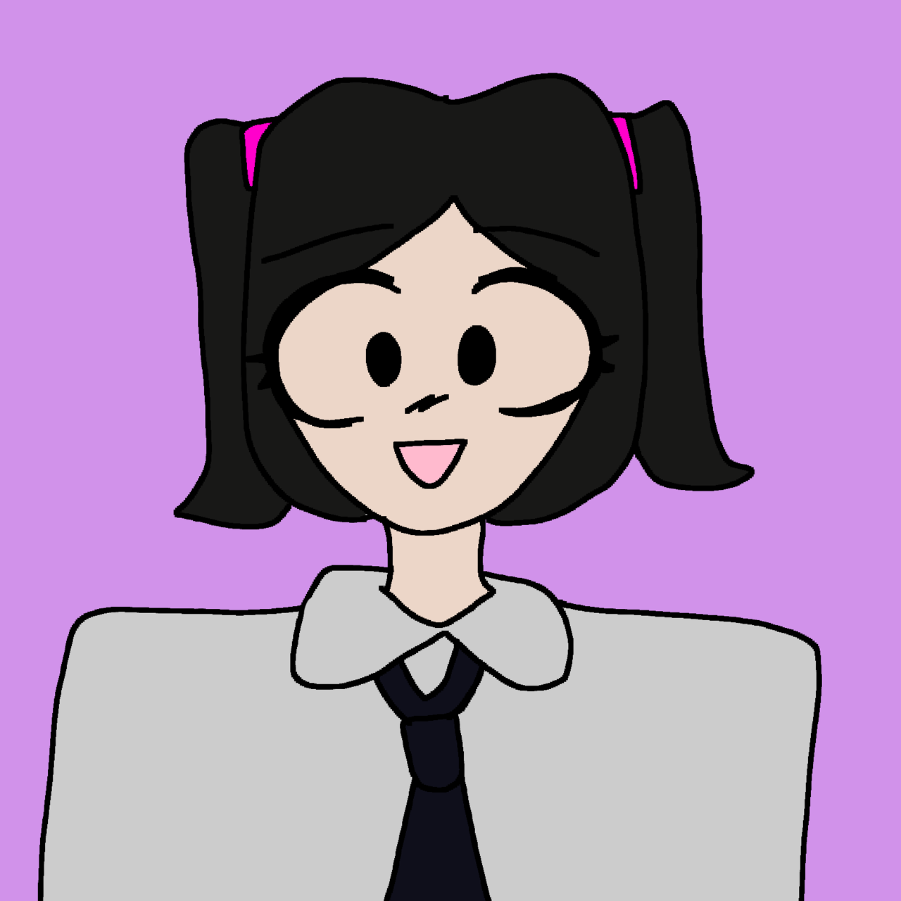
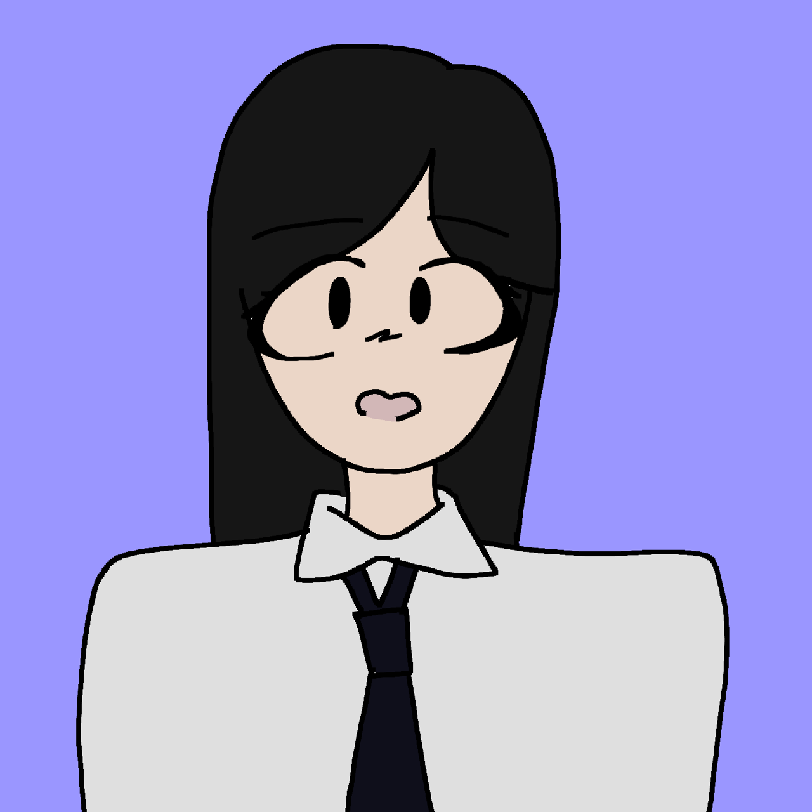
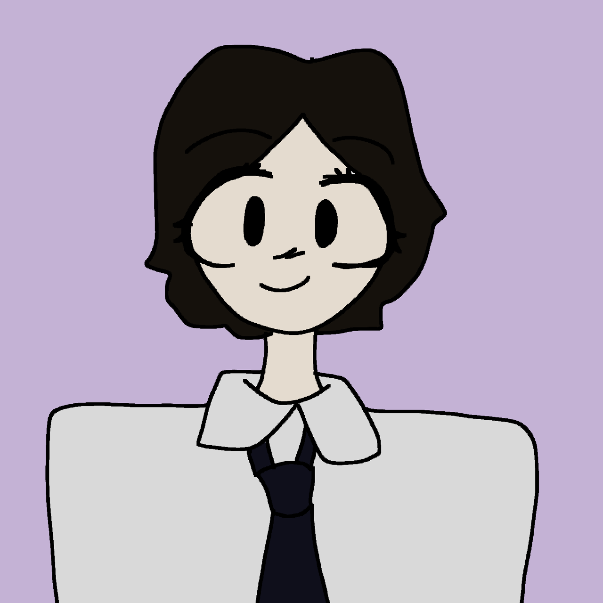
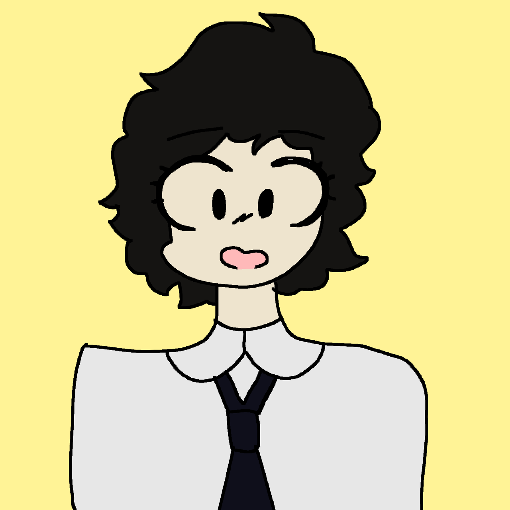

Khit Su Thet Han안녕하세요, I'm Khit Su. I'm from Y7 Crimson. my duty on this website are the main page creator and the coder of this website.For me, I have a experience of bullying that's why I created the cyberbully website to protect yourself for peopel who have been bullied on social media or someone and we also give some advices for not getting fear, full of pressue or stress and suicide.Moreover, we add the ways of cyberbullies can used. I hope our website information will helpful for escaped from cyberbullying. |
 |
|  | Yin Myo Myatこんにちは, I'm Yinn. I'm from year 7 Crimson campus. On this webpage, I've worked as the coder, logo creator and the idea provider. I'd like to share you my thoughts too! I've bullied before on social media before, once it attacked I got no awareness for that. So in here, we year7 students had shared you about how to protect yourself and give advice to you. These tips will help you use social media safety. We hope this website will be helpful and useful for your life! |
Myat Phoo Pwint你好, I'm Phoo, and I'm from year 7 Crimson. I'm the designer, media explorer, and reference page coder. I know that getting bullied on the internet is not good and got exposed for it. But, you can't just sit there and cry. You need to stop it. If that happens don't react and comment about it. Ask your parents and tell them about the situation. Like look man, I also have experienced it before and it's okay not to be okay. And, I just wanna say that you should be careful about that. There's always a chance for you. Don't frustrate a lot. It'll be fine mate. |
 |
|  | Shin Moe NweBonjour! I'm Shin Moe and I'm attending in year 7 Crimson class. My duty parts on this websites are media parts and information explorer. If you are the social media user and you want to use it in safety way, we'd proudly say that this website is for you. |